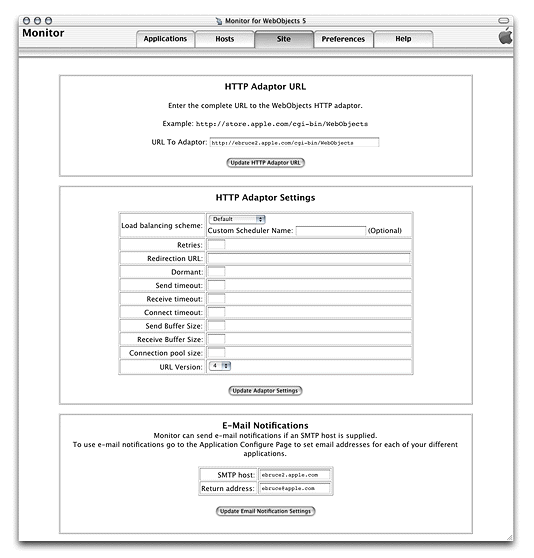

| PATH |

When you click the Site tab in Monitor, the site configuration page is displayed. It contains three sections:
To set the URL for your application, enter the URL in the URL to Adaptor field.
Figure 6-17 shows the site configuration page:
Figure 6-17 The site configuration page
